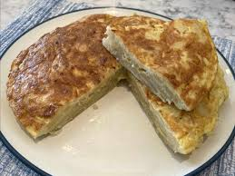

Tortilla de patatas

Description
Tortilla de patatas is a Spanish omelette made from thinly sliced potatoes and onions, cooked in olive oil, and bound with a simple egg mixture. Serve warm or at room temperature for a delicious tapa or appetizer.
Ingredients
- 2 cups extra-virgin olive oil
- 2 pounds Yukon Gold potatoes, peeled and thinly sliced
- 1 medium onion, thinly sliced
- 2 teaspoons pink Himalayan salt, divided
- 6 large eggs
- 1 teaspoon olive oil, or more to taste
Steps
- Fry the potatoes and onion
- Dry potato-onion mixture in a colander and season with salt
- Crack the eggs, season with salt and whisk
- Add potato-onion mixture and toss to coat
- Add the mixture to a heated skillet
- Flip the omelet when it starts to firm up around the edges
- Cook 1 minute more and then serve in a plate